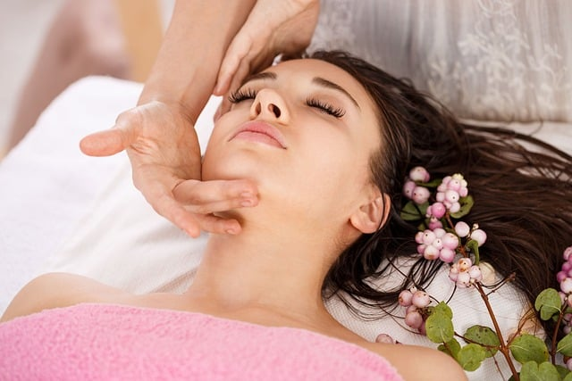
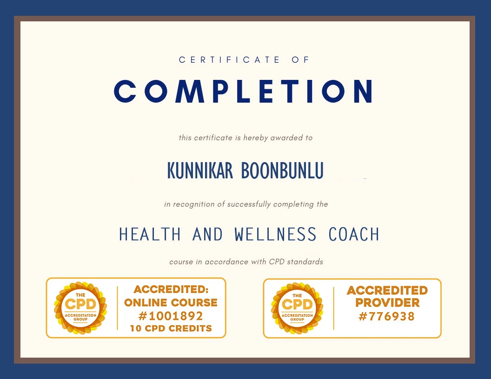
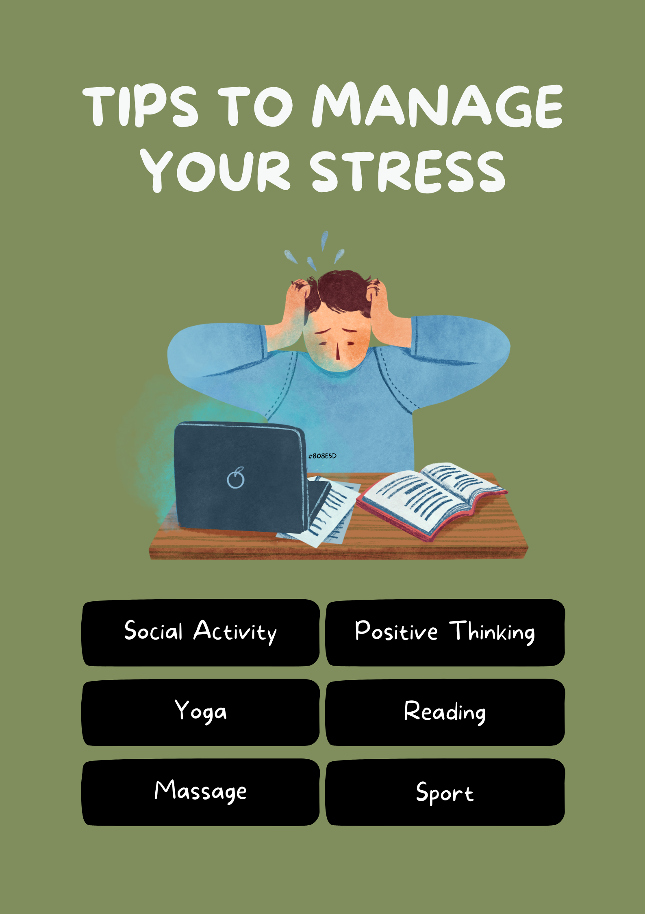
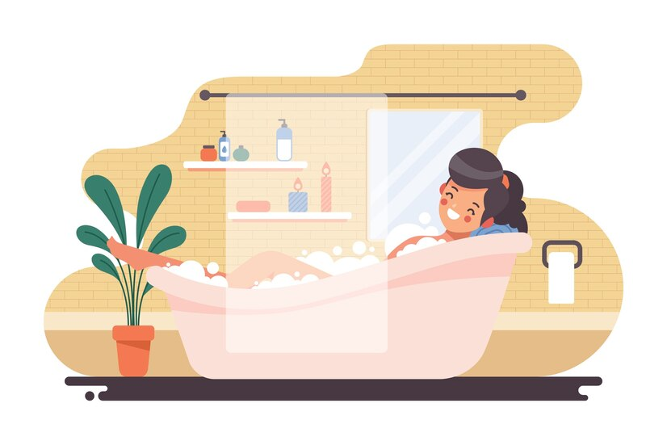

H√§lsa och V√§lbefinnande Vi kombinerar massageterapi med livsstilstips f√∂r att fr√§mja l√•ngsiktig h√§lsa och avkoppling. V√§lbefinnande handlar om mer √§n bara fysisk h√§lsa ‚Äì det √§r en balans mellan sinne, kropp och sj√§l. P√• Let's Relax Stockholm erbjuder vi v√§lbefinnandel√∂sningar som √§r utformade f√∂r att hj√§lpa dig att m√• som b√§st, b√•de inifr√•n och ut. Fr√•n terapeutiska massager till livsstilscoaching, vi √§r h√§r f√∂r att st√∂dja din resa mot ett h√§lsosammare, mer balanserat liv. L√•t oss koppla av Din guide till en h√§lsosammare, lyckligare livsstil  H√§lsa & V√§lbefinnandetips H√§lsa och v√§lbefinnande √§r viktiga komponenter f√∂r ett lyckligt och givande liv. P√• Let's Relax Stockholm tror vi p√• att anta ett holistiskt syns√§tt p√• v√§lbefinnande, som adresserar de fysiska, mentala och k√§nslom√§ssiga aspekterna av h√§lsa. V√•ra v√§lbefinnandetips √§r utformade f√∂r att hj√§lpa dig att uppn√• balans inom alla omr√•den av ditt liv, s√• att du kan m√• som b√§st varje dag. Kunnikar Boonbunlu V√§lbefinnandecoach  Senaste Blogginl√§gg üë©ü誂Äçüíª Vetenskapen bakom stresslindring: Varf√∂r massage fungerar  3 januari 2025 I dagens snabba v√§rld har stress blivit en st√§ndig f√∂ljeslagare f√∂r m√•nga. Oavsett om det beror p√• arbetsdeadlines, familjeansvar eller vardagens j√§kt tar stress ut sin r√§tt p√• b√•de v√•ra sinnen och kroppar. Lyckligtvis har massageterapi visat sig vara ett kraftfullt motgift. Men varf√∂r fungerar massage egentligen? L√•t oss dyka ner i vetenskapen bakom hur massage f√∂rb√§ttrar cirkulationen, minskar kortisol och √∂kar avslappningen. 1. F√∂rb√§ttrad cirkulation Massageterapi stimulerar blodfl√∂det i hela kroppen, vilket ger en rad f√∂rdelar: ü©∏ Syre- och n√§ringstillf√∂rsel: N√§r terapeuten applicerar tryck och anv√§nder olika tekniker, vidgas blodk√§rlen, vilket g√∂r att mer syre och n√§rings√§mnen n√•r muskler och v√§vnader. Detta f√∂ryngrar tr√∂tta och √∂veranstr√§ngda delar av kroppen. üí™üèª F√∂rb√§ttrad borttagning av avfallsprodukter och toxiner F√∂rb√§ttrad cirkulation hj√§lper till att spola ut metaboliska avfallsprodukter och toxiner fr√•n kroppen. Denna process minskar inflammation och fr√§mjar snabbare √•terh√§mtning fr√•n skador eller muskelsm√§rta. ü©∑ F√∂rb√§ttrad lymfdr√§nage och immunfunktion Massage stimulerar lymfsystemet, som spelar en avg√∂rande roll i immunfunktionen. Genom att f√∂rb√§ttra lymffl√∂det hj√§lper massage kroppen att eliminera toxiner och patogener mer effektivt, vilket st√§rker den allm√§nna h√§lsan. 2. Minskade kortisolniv√•er Kortisol, ofta kallat "stresshormonet", sl√§pps ut under tider av press eller √•ngest. √Ñven om det √§r anv√§ndbart i sm√• m√§ngder, h√•ller kronisk stress kortisolniv√•erna f√∂rh√∂jda, vilket leder till h√§lsoproblem som s√∂mnl√∂shet, f√∂rsvagat immunf√∂rsvar och vikt√∂kning. H√§r √§r hur massage kan hj√§lpa: ü߆ Stressreducering: Massageterapi utl√∂ser fris√§ttningen av endorfiner, kroppens naturliga sm√§rtstillande medel och hum√∂rh√∂jare. Dessa "m√•-bra"-kemikalier motverkar kortisols effekter, fr√§mjar avslappning och minskar stress. ü߆ S√§nkt blodtryck: Genom att lugna nervsystemet och fr√§mja avslappning hj√§lper massage till att s√§nka blodtrycket och hj√§rtfrekvensen. Detta minskar kroppens stressrespons och st√∂der den allm√§nna kardiovaskul√§ra h√§lsan. ü߆ F√∂rb√§ttrad s√∂mnkvalitet: Massageterapi har visat sig f√∂rb√§ttra s√∂mnkvaliteten genom att minska kortisolniv√•erna och fr√§mja avslappning. B√§ttre s√∂mn f√∂rb√§ttrar hum√∂ret, kognitiv funktion och allm√§nt v√§lbefinnande. ü߆ √ñkad serotonin och dopamin: Massage utl√∂ser fris√§ttningen av "lyckohormoner" som serotonin och dopamin, som motverkar kortisols effekter och h√∂jer hum√∂ret. Denna naturliga hum√∂rh√∂jning kan hj√§lpa till att bek√§mpa √•ngest och depression. 3. F√∂rb√§ttrad avslappning Avslappning √§r mer √§n bara ett sinnestillst√•nd ‚Äì det √§r en fysiologisk respons som kan f√∂r√§ndra din kropp. Massage fr√§mjar denna respons p√• flera s√§tt: üßòü誂Äç‚ôÄÔ∏è Minskad muskelsp√§nning: Massageterapi riktar in sig p√• sp√§nda, knutna muskler och fascia, vilket sl√§pper sp√§nningar och √•terst√§ller flexibilitet. Denna fysiska avslappning fr√§mjar mental lugn och emotionellt v√§lbefinnande. üßòü誂Äç‚ôÄÔ∏è Stresslindring: Det milda trycket och de lugnande strykningarna vid massage aktiverar det parasympatiska nervsystemet, vilket utl√∂ser kroppens avslappningsrespons. Detta motverkar stressresponsen "flykt- eller kamp" och fr√§mjar en k√§nsla av lugn. üßòü誂Äç‚ôÄÔ∏è Koppling mellan kropp och sj√§l: Massageterapi uppmuntrar mindfulness och kroppsmedvetenhet, vilket hj√§lper dig att st√§mma av dina fysiska f√∂rnimmelser och k√§nslor. Denna koppling mellan kropp och sj√§l fr√§mjar sj√§lvk√§nnedom, stresshantering och allm√§nt v√§lbefinnande. Boka nu Oavsett om du s√∂ker lindring fr√•n daglig sp√§nning eller helt enkelt vill f√∂rb√§ttra ditt v√§lbefinnande, kan regelbundna massager i din rutin leda till ett h√§lsosammare och mer balanserat liv. Massage √§r mer √§n en lyx; det √§r en vetenskapligt underbyggd metod f√∂r stresslindring som gynnar b√•de kropp och sj√§l. Genom att f√∂rb√§ttra cirkulationen, minska kortisol och fr√§mja avslappning, erbjuder massageterapi ett holistiskt f√∂rh√•llningss√§tt f√∂r att bek√§mpa stress. S√• n√§sta g√•ng du k√§nner dig √∂verv√§ldigad, kom ih√•g: l√∂sningen kan bara finnas i ber√∂ringens helande kraft. üíÜü誂Äç‚ôÄÔ∏è 10 enkla tips f√∂r att b√∂rja leva en h√§lsosammare livsstil 27 december 2024 Att leva en h√§lsosam livsstil beh√∂ver inte vara komplicerat eller √∂verv√§ldigande. Sm√•, konsekventa f√∂r√§ndringar kan leda till stora f√∂rb√§ttringar i ditt allm√§nna v√§lbefinnande. P√• Let's Relax Stockholm brinner vi f√∂r att hj√§lpa dig att uppn√• balans i ditt sinne, din kropp och dina dagliga vanor. H√§r √§r 10 enkla tips f√∂r att kickstarta din v√§lbefinnanderesa. 1. H√•ll dig hydrerad Vatten √§r avg√∂rande f√∂r att din kropp ska fungera korrekt. Sikta p√• att dricka minst 8 glas om dagen, och mer om du √§r aktiv. Tips: B√∂rja dagen med ett glas vatten f√∂r att kickstarta hydreringen. 2. R√∂r p√• dig varje dag Regelbunden fysisk aktivitet √∂kar energin, f√∂rb√§ttrar hum√∂ret och st√∂der den allm√§nna h√§lsan. Du beh√∂ver inte tillbringa timmar p√• gymmet ‚Äì promenader, yoga eller dans r√§knas allt! Tips: Sikta p√• 30 minuters m√•ttlig tr√§ning dagligen. 3. Prioritera s√∂mn Kvalitetss√∂mn √§r avg√∂rande f√∂r mental klarhet och fysisk √•terh√§mtning. Skapa en l√§ggdagsrutin som fr√§mjar avslappning, som att l√§sa eller meditera. Tips: H√•ll ditt sovrum m√∂rkt, tyst och svalt f√∂r b√§ttre s√∂mn. 4. √Ñt hela livsmedel Fokusera p√• att √§ta en m√§ngd olika frukter, gr√∂nsaker, fullkorn och magra proteiner. Dessa n√§ringsrika livsmedel ger energi och st√∂der ditt immunf√∂rsvar. Tips: Planera m√•ltider i f√∂rv√§g f√∂r att undvika att str√§cka dig efter bearbetade snacks. 5. √ñva mindfulness Att ta n√•gra minuter varje dag f√∂r att fokusera p√• din andning och rensa tankarna kan minska stress och f√∂rb√§ttra koncentrationen. Tips: Prova meditationsappar eller guidade andnings√∂vningar. 6. St√§rk din core Core√∂vningar f√∂rb√§ttrar h√•llning, balans och allm√§n styrka. Inkludera plankor, broar eller Pilates i din veckorutin. Tips: G√• med i en tr√§ningsklass f√∂r guidade core-pass. 7. Ta pauser fr√•n sk√§rmar F√∂r mycket sk√§rmtid kan anstr√§nga dina √∂gon och st√∂ra din mentala h√§lsa. Kliv bort regelbundet f√∂r att √•terst√§lla. Tips: Anv√§nd 20-20-20-regeln: Var 20:e minut, titta p√• n√•got 20 fot bort i 20 sekunder. 8. H√•ll dig socialt ansluten Starka relationer f√∂rb√§ttrar mental och emotionell h√§lsa. Ta dig tid att tr√§ffa v√§nner, familj eller g√• med i en samh√§llsgrupp. Tips: Planera in veckovisa tr√§ffar med n√§ra och k√§ra. 9. Fira sm√• segrar Att uppn√• dina m√•l tar tid, s√• fira varje steg fram√•t. Positiv f√∂rst√§rkning h√•ller dig motiverad och fokuserad. Tips: Bel√∂na dig sj√§lv med n√•got h√§lsosamt, som en avslappnande massage eller en tr√§ningsklass. 10. F√• regelbundna massager Massageterapi minskar stress, lindrar muskelsp√§nningar och f√∂rb√§ttrar cirkulationen. G√∂r det till en del av din v√§lbefinnanderutin. Tips: Boka en session p√• Let's Relax Stockholm f√∂r en personlig upplevelse. Boka nu Ett h√§lsosamt liv handlar om att hitta balans och g√∂ra val som st√∂der ditt v√§lbefinnande. üßòü誂Äç‚ôÄÔ∏è B√∂rja i liten skala, var konsekvent och njut av resan till ett h√§lsosammare jag. P√• Let's Relax Stockholm √§r vi h√§r f√∂r att st√∂tta dig varje steg p√• v√§gen. ü´∂üèª 9 s√§tt att sk√§mma bort dig sj√§lv i helgen  13 december 2024 1. Unna dig en avkopplande massage En lugnande massage tar bort stress, lindrar muskelsp√§nningar och f√∂rb√§ttrar cirkulationen. Boka en session p√• ditt favoritspa eller friskv√•rdscenter och l√•t avkopplingen b√∂rja. Boka nu 2. Skapa en spa-upplevelse hemma F√∂rvandla ditt badrum till ett minisp√•r! T√§nd n√•gra ljus, spela lugnande musik och njut av ett varmt bad med eteriska oljor eller badsalt. L√§gg till en ansiktsmask eller exfolierande skrubb f√∂r en extra behandling. 3. Njut av en lat morgon Sl√§ng v√§ckarklockan och njut av att sova ut. F√∂lj upp med frukost p√• s√§ngen ‚Äì en h√∂g med pannkakor eller en smoothiebowl kan f√• din morgon att k√§nnas extra speciell. 4. G√• ut och √•terknyt kontakten med naturen Ta en lugn promenad i en park, vid stranden eller p√• en vandringsled. Den friska luften och gr√∂nskan kommer att f√∂ryngra ditt sinne och din kropp. Gl√∂m inte att koppla ur och l√§mna telefonen hemma. 5. Njut av en digital detox St√§ng av dina enheter f√∂r dagen och fokusera p√• aktiviteter som ger dig gl√§dje. L√§s en bok, skriv dagbok om dina tankar eller prova en ny hobby som att m√•la eller baka. 6. Boka en fitness- eller yogaklass Fysisk aktivitet ger inte bara energi √•t din kropp ‚Äì det lyfter ditt hum√∂r. Prova en yoga- eller Pilatesklass f√∂r att stretcha och st√§rka samtidigt som du lugnar ditt sinne. 7. Njut av en uts√∂kt m√•ltid Laga din favoritm√•ltid hemma eller unna dig en m√•ltid p√• en fin restaurang. Att √§ta n√•got du √§lskar utan att stressa igenom det kan vara en riktigt njutbar upplevelse. 8. Prova en ny sj√§lvv√•rdsrutin Experimentera med n√•got nytt, som torrbortning, aromaterapi eller en skalpmassage. Dessa sm√• handlingar av omsorg kan f√• dig att k√§nna dig utvilad och f√∂rnyad. 9. Reflektera och ladda upp med tyst tid S√§tt av tid f√∂r att meditera, skriva dagbok eller bara sitta tyst. Reflektera √∂ver din vecka, lista saker du √§r tacksam f√∂r och s√§tt positiva avsikter f√∂r den kommande veckan. Ta dig tid f√∂r dig sj√§lv ü©∑ den h√§r helgen ‚Äì du f√∂rtj√§nar det!